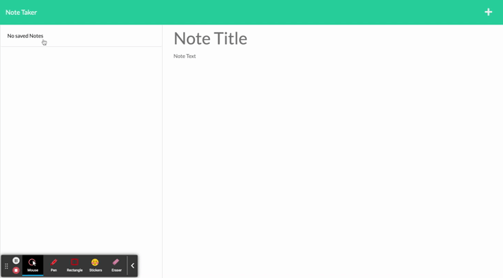
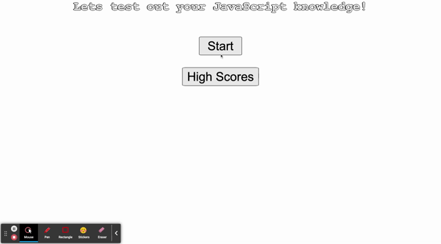

Hi I'm Nem, I graduated from RMIT with a Bachelor of Engineering (Computing and Networking) in 2017. Since then I have been employed by Mondo, a subsidiary of Ausnet Services, who focus on spacial enterprise software. I started out as an Application Support Technician and gradually moved up to a Team Lead position and now I work as a Service Delivery Manager / psuedo Scrum Master.
My goal for the last year has been to get a full time job as a Scrum Master / Agile Coach. I joined University of Sydneys Web Development Bootcamp to learn some technical skills and to gain a more intimate knowledge of a developers day to day life, which I think will be beneficial for a Scrum Master
Outisde of work I enjoy playing and watching chess, reading, long distance cycling and dabbling in amateur photography.
Body of Work
Chirper
This project will enable the users to securely log in to the web application and chat with other users on topics of interest. The user's login will be saved as well as the message history in different chats.
Jquery, JavaScript, Express, SocketIO, BootStrap

ReelMovies
This project will enable the user to search for a movie title in the search bar and and render the movie details (Title, Plot, Actors, Awards and Ratings) along with the YouTube trailer to the screen.
Jquery, JavaScript, YouTube API, OMBD API, TailWind

NoteTaker
This application works as an introduction to backend development. We are presented with written front end code and are required to build the back end, connect the two, and then deploy the entire application to Heroku.
Express, JavaScript
JavaScript Quiz
The purpose of this project was to build a multiple choice quiz which would subtract time on wrong answers and store scores to LocalStorage.
Jquery, JavaScript
Other Skills
Scrum
I am Scrum Certified and conduct the Scrum Events (Sprint Planning, Retro, Stand Up) and attend others (Refinement, Review)
During our Group Project (ReelMovies), I ensured that we would communicate on a daily basis and raise any concerns we had.
Project Management
I designed the different layouts and logic flow diagrams to help the team have a better understanding of how the application works.
Even though we only had two weeks to complete the projects, I would create a milestone every 3-4 days to help us stay on track and motivated.
Kanban Board
I used the Kanban board to assign ourselves tasks during the standup.
The items were categorized in terms of priority (what is the most important to acheiving our MVP). Maintaining the board and keeping the stories as clear and concise was critical to our success.